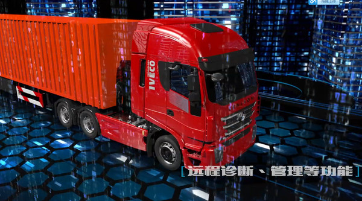

车联网步入野蛮生长期
车联网在备受各界人士青睐的光鲜背后，也因为一系列的问题诸如无人驾驶中的安全问题、 网络安全、核心技术缺失等，引发行业争议。
随着车市逐渐进入低速增长的新常态，以 车联网为代表的新兴业态正逐渐成为汽车产业新的风口。这两年，不仅国内乃至全球都 在热炒“车联网”概念，称车联网发展前景广阔，潜力无限，由此吸引一些传统车企乃 至IT企业纷纷着力布局车联网。然而，车联网在备受各界人士青睐的光鲜背后，也因为一 系列的问题诸如无人驾驶中的安全问题、网络安全、核心技术缺失等，引发行业争议。

车联网并不等同于简单的“汽车＋手机”
在很长一段时间里，尤其是车联网概念诞生之初，很多人都将车联网简单地定义为“汽车 手机”， 当然不排除现在很多人依然有这种想法。某企业负责人在“2016上海（浦东）车联网峰会暨中 国汽车互联网 创新大典”上直言道，如果车联网就是简单地把手机与汽车进行互联，让人在车 上用手机进行联网的话，那么这一目标人类早就实现了。事实上，车联网是一个巨大的交互网络， 在这个网络系统里，基于智能化、网联化技术、感器技术、软件技术、操作系统以及大数据分析等， 每一辆车均拥有比现如今更高的智能性、自主性，能够结合所处环境做出最佳反应，比如大家常 说的实时计算最佳路线、及时汇报路况、安排信号灯周期、网上车辆诊断等基本功能，以及更 高层次的无人驾驶这样的智能汽车生活，充分提高车辆在路上行驶效率和车辆的使用效率， 让人类出行更便捷、高效。此外，构建车联网还有一个更深层次的意义，即通过构建一个互联互通 的平台，实现万物相联，从而将人、将我们所生活的环境从长时间驾驶疲惫、交通拥堵、交通事故、 环境污染等由交通引发的一系列问题中解放出来，解决现如今人与车、车与车、车与路之间的一 系列矛盾，还真正的和谐于这个社会。
车联网产品有哪些
中国的车联网随着物联网的发展不断壮大，据汉唐云界统计2015年车联网市场即将突破1500亿元， 有将近60%的汽车都配置车联网产品技术。百度、阿里、腾讯，相继发力车联网市场， 搅动了原本平静的一江春水。预计在2020年将有90%的汽车安装车联网产品。那么，车联网产品有哪些呢？
按照车联网产品形态分类，可分为三大类型：
一、针对汽车车主的服务于运营软件模式（车联网app）；
二、针对于汽车功能完善的硬件模式；
三、以硬件为切入工具带动后台服务的软硬结合模式。
按车主的汽车使用过程可分为分售前信息推送、售中购销平台、售后维护保养以及维修。
按车主在不同地理环境和不同使用场景，可分为行车过程、停车/找车过程、堵车中、租车/拼车等几类需求。
在市场上运营的车联网产品
1、只能作为一种简单生意的产品：曾经各领风骚的各种导航仪、手机夹子、蓝牙音箱、蓝牙耳机、 各种软硬电子狗，因为功能单一，可替代性强，均属于此类。
2、高端技术产品：曾经被一直看好的号称汽车唯一数据信息输出端口的OBD产品， 影射在独立屏幕或者在前车挡风玻璃上的抬头显示设备等。
3、汽车厂商并入标配的有价值的服务：国内外很多开发公司都在研发基于车距、 行人、相对车速可能产生事故的软硬件产品，有核心价值的倒车雷达。
4、只能走向前装和预装，不可能成为开发者期待的运营性的产品：行车记录仪，3G/4G上网功能的智能导航，车机，
“车联网+”时代的到来 有你我更放心!
2015年，“互联网+”被写入总理的政府工作报告，这意味着“互联网+”被纳入顶层设计， 成为国家经济社会发展的重要战略。红岩杰狮具备“最强大脑”，其核心部分就是杰时 达(GEN-Star)车联网系统，带您进入“车联网+”智能管理时代。
上汽红岩基于欧洲技术与中国用户实际需求，率先用“车联网+”的发展理念，在IVECO成熟车辆信息化、 智能化技术基础上，推出的融汇中外物联技术的“杰时达”车联网系统，能把“人与车”、“车与车”、“车与社会”、 “车与货”等全面互联，为用户和经销商提供更多的增值服务。
车联网+“车生活”
枯燥旅途
唯有反复听过多遍的MP3音乐相伴
停车休息
货物安全又时常让司机们提心吊胆
道路拥堵
没有办法提前预判
这些是卡友们一直想去改变的
有了“杰时达”车联网系统，给您带来全新的“车生活”：天气、新闻、音乐、视频、4S店优惠、 周边购物与餐饮折扣等各类的资讯与娱乐让旅途不再枯燥；货物、燃油、电瓶乃至整车防盗 保障有力，可报警、可追终、可锁车，不必提心吊胆；显示屏中道路红、黄、绿显示的拥堵、 缓慢及畅通状况一目了然。
车联网+“车服务”
忙碌运输
时常忘记车辆保养时间
车辆故障
只能停车耐心等待服务驰援
突发事故
发送准确求救信息格外艰难
这些是卡友们一直想去改变的
有了“杰时达”车联网系统，全新“车服务”关怀零距离：大平台、云数据， 科学的养护计划让维护更为规范，省心省力；远程故障诊断、实时检测、 车况信息提供，突发故障从容应对；事故后车辆自动或人工报警救助， 救援中心获取信息更为全面。
车联网+“车管理”
大车队、大物流
车辆是否按规定路线行驶
油耗、成本是否可控
这些是物流公司一直想更完善的
有了“杰时达”车联网系统，全新“车管理”明显大不同：行驶线路、区域偏移报警、位置管理追踪；报表定制， 智能、精细、规范车辆运营管理；实时油耗监测、油耗数据分析，改善驾驶人员操作行为，达到最佳油耗 ，实现成本最大优化。
车联网+“车金融”
重卡80%左右通过金融模式实现销售
贷款人员资信
还款节点提醒
这些是经销商一直想更安全的
有了“杰时达”车联网系统，全新“车金融”必须不一样：发车时间、 在途情况、到达时间、库存位置全时掌控；贷款人员信誉资信一查便知；还款提醒、欠款通知到时必达。
杰时达车联网系统拥有“最强大脑”，想您之所想，让卡友们在“车载导航+呼叫中心”之外， 真真正正体验到更多更实在的服务。与您悉心相伴，真正成为您的“护航者”和“贴心人”。
车联网大势所趋不要犹豫
9月28日，在2016上海浦东国际汽车展前，由中国国际贸易促进委员会汽车行业分会主办的2016上海 （浦东）车联网峰会暨中国汽车互联网+创新大典隆重举行，新兴造车势力、养车、汽车金融等领域从业者， 走到台前，与大家分享及探讨未来的市场前景。以下是主办方，中国国际贸易促进委员会汽车行业分会会长 王侠欢迎致辞：
尊敬的各位嘉宾，女士们、先生们，大家上午好！
在这个夏末秋初、时令更替的丰收季节，适逢2016上海浦东国际汽车展举行之机，我们迎来了上海（浦东） 车联网峰会暨中国汽车互联网+创新大典。在此，我谨代表主办单位中国汽车贸促会，对各位朋友的莅临 表示热烈的欢迎和衷心的感谢！
近年来，汽车产业的电动化、智能化和网联化不仅成为业内热议的话题，而且也正在成为全产业链创新求变、 转型升级的主战场。但是，热点和繁荣的背后，不少挑战和困惑也逐渐浮出水面。就像电动车要面对充电桩 和补贴等难题一样，车联网也在热捧之后开始遇冷，无人驾驶也接连遭遇交通死亡事故的困扰。其实 ，任何新生事物在发展初期都不可避免地会遇到挫折和挑战，我们要理性面对、系统分析，既对前景充满信心， 又对可能遇到的挑战有清醒的认识，才能在变革的大潮中认准自己的方向。
首先，我们要清醒地认识到，汽车的智能化和网联化是大势所趋，是不可阻挡的方向。电动车还有技术路线之争、 对减少污染和能源危机的疑惑，但智能化和网联化可以说对汽车只有好处，没有坏处。汽车诞生130多年来， 除了带给人类方便之外，还带来了许多难以克服的问题，比如交通事故、环境污染和拥堵、能源危机等等。 车联网和自动驾驶等新技术的应用，让我们有可能让汽车与社会的关系变得更加和谐，真正实现汽车让人类生 活更美好的梦想。现在不少基础薄弱的车企，积极在车载智能系统和网联系统上玩花样放大招，一些有品牌和 技术优势的车企反而趋于保守，多持观望态度，这也是目前车联网叫好不叫座、貌似热闹却普及率不高的重 要原因。我想说的是，既然是大势所趋，就不要犹豫不决，否者真的会给对手赶超的机会。
我们要清醒地认识到，智能和网联汽车能够从供给侧极大地扩展传统汽车产业的内涵和外延。 汽车市场的低增长成为常态之后，我们对于销量的追求空间越来越有限，而以智能汽车和车联网为主 要特征的智能交通系统能够让车企改变单纯追求销量的传统发展模式，转而真正追求为消费者和社会提 供完善的交通出行解决方案和更多服务价值，这实际上是为我们打开了销量之外新的增长通道。
我们要清醒地认识到，车联网这样的新生事物不能单靠某些企业个体实现突破，必须是社会性的统一行动。 一方面，车联网是一个汽车生态，政府要有及时的规划和政策引导以及基础设施方面的投入， 企业要让自己的发展计划与国家层面的大规划步调一致。另一方面，车联网又是由整车制造商、 产品供应商、内容提供商、软件供应商、服务提供商、网络运营商等不同角色组成的产业链 ，尤其是主机厂与网络运营商之间必须进行有效的业务整合，打破壁垒，互相开放信息系统， 进行深层合作，否则是难以建立起一个健康的车联网生态的。
我们要清醒地认识到，汽车的智能化和网联化不能单靠一两项技术的突破，而是要靠一个技术集群的集体支撑。 我们也不能简单地把手机与汽车的互联放大成车联网，如果通过手机就能解决的，其实不应该叫车联网。 大数据、新能源技术、网联技术、自动驾驶技术、传感技术、网络安全技术等，这些技术的应用都是相互影响 、相互促进甚至是互为条件的。比如汽车共享和无人驾驶，就只能在车联网的前提下才能实现 ，而以无人驾驶为代表的高端智能汽车的出现则可能给物流运输业带来颠覆性的改变，并给汽车共享带来更 多可能性。另一方面，与手机和家电不同的是，汽车技术的演进是一个长期而艰辛的过程，绝对不是有 钱就可以任性的地方。许多国际汽车巨头的无人驾驶技术规划都是在三至五年内达到2级或者3级水平， 中国车企面临的问题一点也不比别人少，我们一定要避免浮躁情绪，少造概念，多在核心技术上下功夫。
在刚刚结束的G20峰会上，习近平主席表示：8年后的今天，世界经济又走到一个关键当口；科技进步、 人口增长、经济全球化等过去数十年推动世界经济增长的主要引擎都先后进入换挡期，对世界经济的 拉动作用明显减弱；上一轮科技进步带来的增长动能逐渐衰减，新一轮科技和产业革命尚未形成势头 。其实，对于全球汽车产业来讲，又何尝不是这样----汽车需求增量明显减弱，传统技术进步的空间 越来越小。在这样的背景下，智能化、网联化和电动化正好为全球汽车产业提供了新引擎，为汽车技 术进步提供了新路径，为汽车产业供给侧改革提供了新抓手。
今天，我们以“智驾未来、创领先锋”为主题，邀请各位企业家、专家学者共聚一堂，希望大家能敞开心扉， 知无不言，为车联网时代汽车产业的发展建言献策，为互联网+时代的汽车技术变革提供宝贵的思想力量。
最后，我衷心地预祝本届峰会圆满成功，祝各位朋友在沪期间顺利、快乐、安康。谢谢大家！